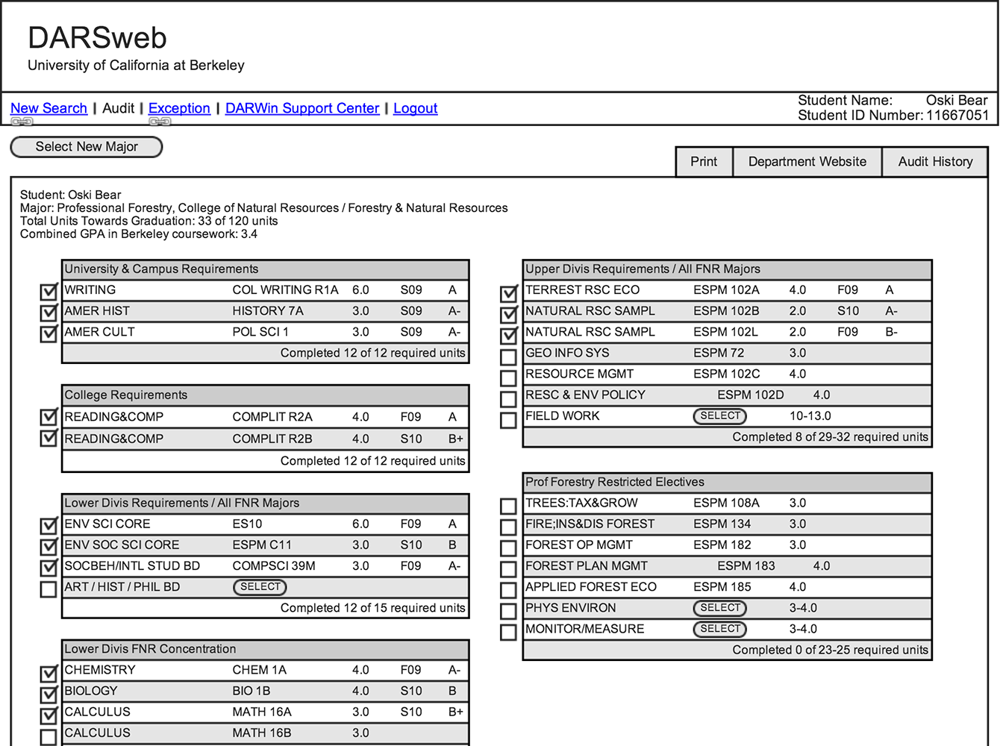

Degree Audit Report System

Link
Skills
Interaction Design
Research
Tools
Mockingbird
Partners
Sara Cambridge
John Wang
The Degree Audit Reporting System (DARS) is an online tool which allows students and their advisors to check students’ progress towards their degree requirements. Many advisors still prefer to use a paper due to the cumbersome nature and inaccuracy of DARS. In our research, we found that the number one barrier to adoption is the outdated user interface of DARS. Some major concerns were the unintuitive screens and large vocabulary of codes.
We interviewed professors, students, and DARS staff to understand the needs of all stakeholders. We then designed a better interface within the constraints of the existing infrastructure. Read more about our process and rationale here.